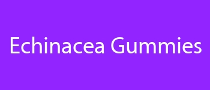

echinacea gummies
echinacea gummies for adults
echinacea vitamin c zinc gummies
elderberry and echinacea gummies
More
elderberry echinacea gummies
elderberry zinc echinacea gummies
gummy cuties echinacea
gummy echinacea
propolis and echinacea gummies
propolis and echinacea gummies benefits
zinc and echinacea gummies
echinacea gummy bears
elderberry gummies with echinacea
vitamin c echinacea gummy bears
zinc echinacea gummies
are there echinacea in gummies
can i get echinacea in gummies
cbd echinacea gummies
children's echinacea gummies
echinacea for kids gummies
echinacea gummies adults
echinacea gummies for kids
echinacea gummies for toddlers
echinacea gummies recipe
echinacea gummy
echinacea gummy bears for pet rats
echinacea in gummy form
echinacea nature valley gummies
elderberry gummies with zinc and echinacea
elderberry gummies with zinc echinacea vitamin c and
gummies echinacée
gummies vitamins zinc and echinacea
gummy echinacea bears
immune c plus zinc & echinacea 190 gummy bears
immune c plus zinc and echinacea gummy bears
kids echinacea gummy
kids gummies vitamin c zinc echinacea
multivitamin gummies with echinacea
multivitamin gummies with echinacea extract
propolis and echinacea dietary supplement gummies
vitamin c and echinacea gummies
do airborne gummies work
echinacea zinc and vitamin c
zinc echinacea vitamin c
airborne gummies with zinc
children's echinacea
echinacea and zinc
echinacea for kids
echinacea zinc
echinacea zinc vitamin c
immune c plus
propolis gummies
propolis vitamin c + zinc
propolis vitamin c zinc
propolis zinc c
propolis zinc vitamin c
vitamin c and e gummies
vitamin c and echinacea
vitamin c with echinacea and zinc
vitamins c and d zinc and echinacea
zinc echinacea
What are the benefits of propolis and echinacea gummies?
Does echinacea come in gummies?
What does vitamin C echinacea do for you?
What to avoid when taking echinacea?
Why should you not take echinacea everyday?
Who Cannot take echinacea?
What are the side effects of echinacea?
What are the pros and cons of echinacea?
Does echinacea make you sleepy?
Does echinacea help when you are already sick?
Why not take echinacea on an empty stomach?
Can echinacea interfere with sleep?
What does echinacea do to the brain?
Why can't you take echinacea for more than 10 days?
Is echinacea hard on the liver?
What drugs does echinacea interact with?
Is echinacea a natural antibiotic?
How long does it take for echinacea to work?
Can echinacea overstimulate the immune system?
Does echinacea cause anxiety?
Is echinacea safe for heart?
Is echinacea an anti inflammatory?
Is echinacea good for anxiety?
What's the best form of echinacea?
Can I take echinacea supplements everyday?
Does echinacea help with fatigue?
Will echinacea keep you awake?
Who should not take echinacea?
What are the side effects of echinacea?
What to avoid when taking echinacea?
Does echinacea help when you are already sick?
What are the benefits and side effects of echinacea?
Is echinacea hard on the liver?
What are the pros and cons of echinacea?
What does echinacea do for hormones?
What happens if you take too much echinacea?
Does echinacea work immediately?
Can echinacea overstimulate the immune system?
Is echinacea an anti-inflammatory?
Does echinacea affect sleep?
Does echinacea react with anything?
Is it OK to take echinacea every day?
Does echinacea cleanse your body?
How does echinacea help your immune system?
How much echinacea can I take a day?
Does echinacea cause anxiety?
Does echinacea increase histamine?
Does echinacea give you energy?
Does echinacea cause blood clots?
How long can you safely take echinacea?
Is echinacea safe for heart?
What drugs does echinacea interact with?
Is echinacea an antibiotic?
Is echinacea good for your gut?
Can I take echinacea and paracetamol?
Does echinacea help with hair growth?
Is echinacea or vitamin C better?
Why is echinacea so expensive?
Which brand of echinacea is best?
Can you take echinacea and vitamin C at the same time?
What vitamins are in echinacea?
Does echinacea have caffeine?
Is echinacea good before bed?
Is it worth taking echinacea?
Why not take echinacea on an empty stomach?
What to avoid when taking echinacea?
What does echinacea do to the brain?
Does echinacea help with fatigue?
About Us
HTML Site Map
Last updated:2023 Oct, Sat
No of Pages :
134 pages
1)
index.html
2)
echinacea-gummies-for-adults.html
3)
echinacea-vitamin-c-zinc-gummies.html
4)
elderberry-and-echinacea-gummies.html
5)
elderberry-echinacea-gummies.html
6)
elderberry-zinc-echinacea-gummies.html
7)
gummy-cuties-echinacea.html
8)
gummy-echinacea.html
9)
propolis-and-echinacea-gummies.html
10)
propolis-and-echinacea-gummies-benefits.html
11)
zinc-and-echinacea-gummies.html
12)
echinacea-gummy-bears.html
13)
elderberry-gummies-with-echinacea.html
14)
vitamin-c-echinacea-gummy-bears.html
15)
zinc-echinacea-gummies.html
16)
are-there-echinacea-in-gummies.html
17)
can-i-get-echinacea-in-gummies.html
18)
cbd-echinacea-gummies.html
19)
childrens-echinacea-gummies.html
20)
echinacea-for-kids-gummies.html
21)
echinacea-gummies-adults.html
22)
echinacea-gummies-for-kids.html
23)
echinacea-gummies-for-toddlers.html
24)
echinacea-gummies-recipe.html
25)
echinacea-gummy.html
26)
echinacea-gummy-bears-for-pet-rats.html
27)
echinacea-in-gummy-form.html
28)
echinacea-nature-valley-gummies.html
29)
elderberry-gummies-with-zinc-and-echinacea.html
30)
elderberry-gummies-with-zinc-echinacea-vitamin-c-and.html
31)
gummies-echinacee.html
32)
gummies-vitamins-zinc-and-echinacea.html
33)
gummy-echinacea-bears.html
34)
immune-c-plus-zinc-echinacea-190-gummy-bears.html
35)
immune-c-plus-zinc-and-echinacea-gummy-bears.html
36)
kids-echinacea-gummy.html
37)
kids-gummies-vitamin-c-zinc-echinacea.html
38)
multivitamin-gummies-with-echinacea.html
39)
multivitamin-gummies-with-echinacea-extract.html
40)
propolis-and-echinacea-dietary-supplement-gummies.html
41)
vitamin-c-and-echinacea-gummies.html
42)
do-airborne-gummies-work.html
43)
echinacea-zinc-and-vitamin-c.html
44)
zinc-echinacea-vitamin-c.html
45)
airborne-gummies-with-zinc.html
46)
childrens-echinacea.html
47)
echinacea-and-zinc.html
48)
echinacea-for-kids.html
49)
echinacea-zinc.html
50)
echinacea-zinc-vitamin-c.html
51)
immune-c-plus.html
52)
propolis-gummies.html
53)
propolis-vitamin-c-+-zinc.html
54)
propolis-vitamin-c-zinc.html
55)
propolis-zinc-c.html
56)
propolis-zinc-vitamin-c.html
57)
vitamin-c-and-e-gummies.html
58)
vitamin-c-and-echinacea.html
59)
vitamin-c-with-echinacea-and-zinc.html
60)
vitamins-c-and-d-zinc-and-echinacea.html
61)
zinc-echinacea.html
62)
what-are-the-benefits-of-propolis-and-echinacea-gummies.html
63)
does-echinacea-come-in-gummies.html
64)
what-does-vitamin-c-echinacea-do-for-you.html
65)
what-to-avoid-when-taking-echinacea.html
66)
why-should-you-not-take-echinacea-everyday.html
67)
who-cannot-take-echinacea.html
68)
what-are-the-side-effects-of-echinacea.html
69)
what-are-the-pros-and-cons-of-echinacea.html
70)
does-echinacea-make-you-sleepy.html
71)
does-echinacea-help-when-you-are-already-sick.html
72)
why-not-take-echinacea-on-an-empty-stomach.html
73)
can-echinacea-interfere-with-sleep.html
74)
what-does-echinacea-do-to-the-brain.html
75)
why-cant-you-take-echinacea-for-more-than-10-days.html
76)
is-echinacea-hard-on-the-liver.html
77)
what-drugs-does-echinacea-interact-with.html
78)
is-echinacea-a-natural-antibiotic.html
79)
how-long-does-it-take-for-echinacea-to-work.html
80)
can-echinacea-overstimulate-the-immune-system.html
81)
does-echinacea-cause-anxiety.html
82)
is-echinacea-safe-for-heart.html
83)
is-echinacea-an-anti-inflammatory.html
84)
is-echinacea-good-for-anxiety.html
85)
whats-the-best-form-of-echinacea.html
86)
can-i-take-echinacea-supplements-everyday.html
87)
does-echinacea-help-with-fatigue.html
88)
will-echinacea-keep-you-awake.html
89)
who-should-not-take-echinacea.html
90)
what-are-the-side-effects-of-echinacea-1.html
91)
what-to-avoid-when-taking-echinacea-1.html
92)
does-echinacea-help-when-you-are-already-sick-1.html
93)
what-are-the-benefits-and-side-effects-of-echinacea.html
94)
is-echinacea-hard-on-the-liver-1.html
95)
what-are-the-pros-and-cons-of-echinacea-1.html
96)
what-does-echinacea-do-for-hormones.html
97)
what-happens-if-you-take-too-much-echinacea.html
98)
does-echinacea-work-immediately.html
99)
can-echinacea-overstimulate-the-immune-system-1.html
100)
is-echinacea-an-anti-inflammatory-1.html
101)
does-echinacea-affect-sleep.html
102)
does-echinacea-react-with-anything.html
103)
is-it-ok-to-take-echinacea-every-day.html
104)
does-echinacea-cleanse-your-body.html
105)
how-does-echinacea-help-your-immune-system.html
106)
how-much-echinacea-can-i-take-a-day.html
107)
does-echinacea-cause-anxiety-1.html
108)
does-echinacea-increase-histamine.html
109)
does-echinacea-give-you-energy.html
110)
does-echinacea-cause-blood-clots.html
111)
how-long-can-you-safely-take-echinacea.html
112)
is-echinacea-safe-for-heart-1.html
113)
what-drugs-does-echinacea-interact-with-1.html
114)
is-echinacea-an-antibiotic.html
115)
is-echinacea-good-for-your-gut.html
116)
can-i-take-echinacea-and-paracetamol.html
117)
does-echinacea-help-with-hair-growth.html
118)
is-echinacea-or-vitamin-c-better.html
119)
why-is-echinacea-so-expensive.html
120)
which-brand-of-echinacea-is-best.html
121)
can-you-take-echinacea-and-vitamin-c-at-the-same-time.html
122)
what-vitamins-are-in-echinacea.html
123)
does-echinacea-have-caffeine.html
124)
is-echinacea-good-before-bed.html
125)
is-it-worth-taking-echinacea.html
126)
why-not-take-echinacea-on-an-empty-stomach-1.html
127)
what-to-avoid-when-taking-echinacea-2.html
128)
what-does-echinacea-do-to-the-brain-1.html
129)
does-echinacea-help-with-fatigue-1.html
130)
privacy-policy.html
131)
feed.xml
132)
sitemap.xml
133)
sitemap.html
134)
about-us.html